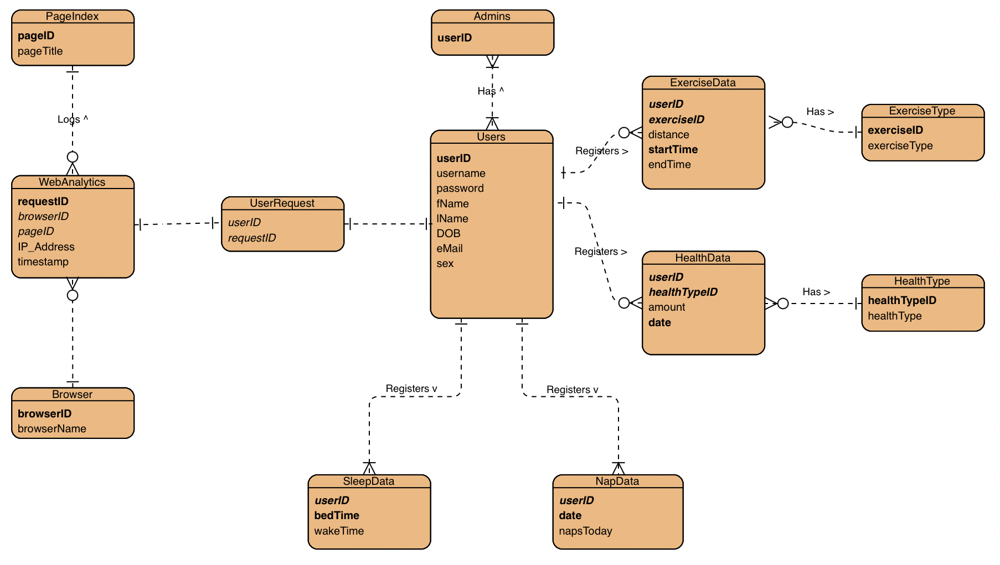

Group 6 - Health Dashboard
Functional Requirements
- The system must provide a login page so only authenticated users can use the system.
- The system must support two categories of users: system administrators and end-users.
- End-users must be able to REGISTER to the system.
- End-users must be able to LOGIN to the system.
-
End-users must be able to ADD and VISUALIZE (using graphs) data such as:
- Steps per day
- Energy expenditure (burned calories) per day.
- Walked distance per day.
- Cycled distance per day.
- Bedtime (time the person goes to bed) per day.
- Get uptime (time the person leaves the bed to start the day) per day.
- Sleeping hours per day.
- Number of daytime naps per day.
- Weight per day.
- Administrators must be able to manage users, for example, add, update and remove.
- Administrators must be able to visualize some analytics of the website, for example:
- A pie chart indicating the most common browser using the site.
- A table indicating how many times and the last time a given IP address accessed the site.
- A table showing an access log, i.e., which user, page, date, and time.
Technical Requirements
- Good database design.
- Good and responsive web design.
- Valid HTML5, CSS3, JavaScript (or jQuery).
- The system is deployed in the School Server Environment.
- Forms must be validated.
Results
Database Model
The ER diagram for our database.

Functional Requirements
All functional requirements have been implemented.
Extra features
A dynamic pop-up box next to the password field in the registration form to indicate which passwords requirements have been met while typing.
Datepicker for all fields where a date is to be entered, to ease selection and ensure correct format
An extra feature on our website is the administrators ability to quickly grant or revoke admin privileges for users.
A switch on the bottom of the update users page is checked if the user is admin, and unchecked if not.